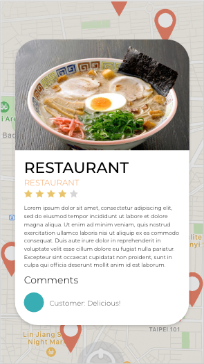

Prototype
利用動手實際製作原型來驗證假說，找出對使用者經驗最好的設計。
利用動手實際製作原型來驗證假說，找出對使用者經驗最好的設計。
我們使用了Adobe XD 來製作 Low Fidelity Prototype, 以最快速、低成本的方法來驗整我們的假說。透過SUS易用性量表，我們在測試中發現以下會使使用者的經驗更好：
我們以InVision來製作Medium Fidelity Prototype，其中最大的限制是尚未完成真正的搜尋功能與餐廳資訊,背後需要大量資料與程式運作。另外我們預計專屬於使用者的推薦功能,之後才會出現在最終的應用程式中。
再經過Heuristic Evaluation之後修改成High-Fi Prototype，我們的發現是從易用性評估結果發現設計時的邏輯不一定能符合使用者的思考框架及流程，因此圖示所代表的意義須明確、一致，文字描述應更直覺，讓使用者能即時掌握每一個頁面的版面安排，有利後續的操作。